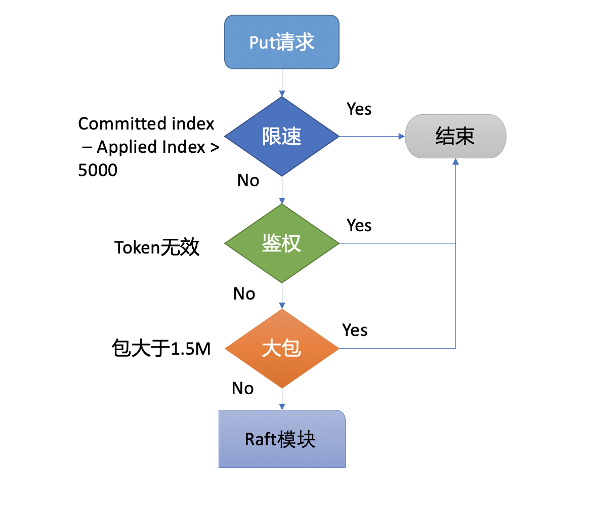
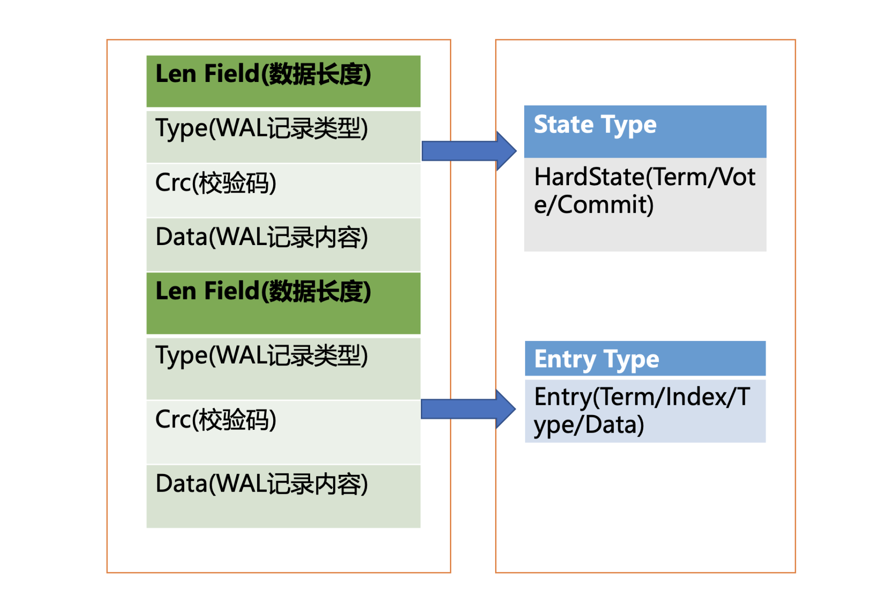
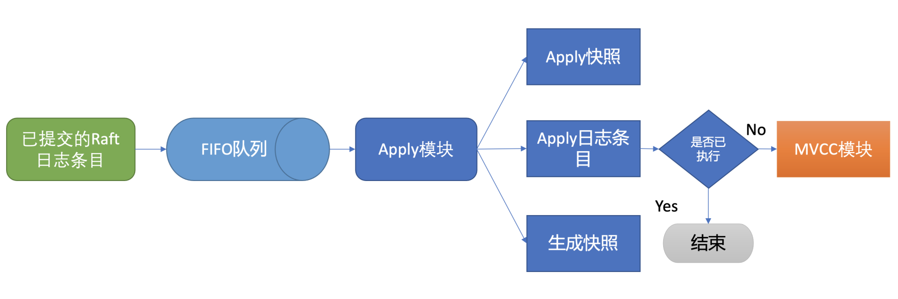
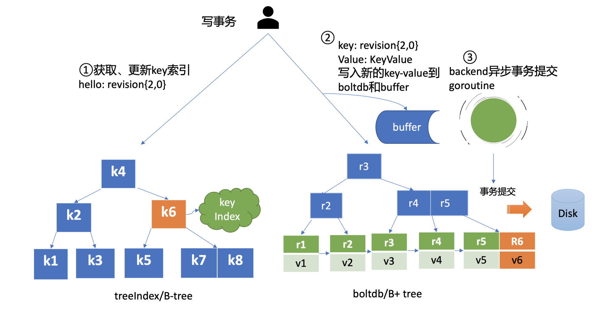

- 00 开篇词 为什么你要学习etcd_.md.html
- 01 etcd的前世今生：为什么Kubernetes使用etcd？.md.html
- 02 基础架构：etcd一个读请求是如何执行的？.md.html
- 03 基础架构：etcd一个写请求是如何执行的？.md.html
- 04 Raft协议：etcd如何实现高可用、数据强一致的？.md.html
- 05 鉴权：如何保护你的数据安全？.md.html
- 06 租约：如何检测你的客户端存活？.md.html
- 07 MVCC：如何实现多版本并发控制？.md.html
- 08 Watch：如何高效获取数据变化通知？.md.html
- 09 事务：如何安全地实现多key操作？.md.html
- 10 boltdb：如何持久化存储你的key-value数据？.md.html
- 11 压缩：如何回收旧版本数据？.md.html
- 12 一致性：为什么基于Raft实现的etcd还会出现数据不一致？.md.html
- 13 db大小：为什么etcd社区建议db大小不超过8G？.md.html
- 14 延时：为什么你的etcd请求会出现超时？.md.html
- 15 内存：为什么你的etcd内存占用那么高？.md.html
- 16 性能及稳定性（上）：如何优化及扩展etcd性能？.md.html
- 17 性能及稳定性（下）：如何优化及扩展etcd性能_.md.html
- 18 实战：如何基于Raft从0到1构建一个支持多存储引擎分布式KV服务？.md.html
- 19 Kubernetes基础应用：创建一个Pod背后etcd发生了什么？.md.html
- 20 Kubernetes高级应用：如何优化业务场景使etcd能支撑上万节点集群？.md.html
- 21 分布式锁：为什么基于etcd实现分布式锁比Redis锁更安全？.md.html
- 22 配置及服务发现：解析etcd在API Gateway开源项目中应用.md.html
- 23 选型：etcd_ZooKeeper_Consul等我们该如何选择？.md.html
- 24 运维：如何构建高可靠的etcd集群运维体系？.md.html
- 特别放送 成员变更：为什么集群看起来正常，移除节点却会失败呢？.md.html
- 结束语 搞懂etcd，掌握通往分布式存储系统之门的钥匙.md.html
- 捐赠
03 基础架构：etcd一个写请求是如何执行的？
你好，我是唐聪。
在上一节课里，我通过分析etcd的一个读请求执行流程，给你介绍了etcd的基础架构，让你初步了解了在etcd的读请求流程中，各个模块是如何紧密协作，执行查询语句，返回数据给client。
那么etcd一个写请求执行流程又是怎样的呢？在执行写请求过程中，如果进程crash了，如何保证数据不丢、命令不重复执行呢？
今天我就和你聊聊etcd写过程中是如何解决这些问题的。希望通过这节课，让你了解一个key-value写入的原理，对etcd的基础架构中涉及写请求相关的模块有一定的理解，同时能触类旁通，当你在软件项目开发过程中遇到类似数据安全、幂等性等问题时，能设计出良好的方案解决它。
整体架构

为了让你能够更直观地理解etcd的写请求流程，我在如上的架构图中，用序号标识了下面的一个put hello为world的写请求的简要执行流程，帮助你从整体上快速了解一个写请求的全貌。
etcdctl put hello world --endpoints http://127.0.0.1:2379
OK
首先client端通过负载均衡算法选择一个etcd节点，发起gRPC调用。然后etcd节点收到请求后经过gRPC拦截器、Quota模块后，进入KVServer模块，KVServer模块向Raft模块提交一个提案，提案内容为“大家好，请使用put方法执行一个key为hello，value为world的命令”。
随后此提案通过RaftHTTP网络模块转发、经过集群多数节点持久化后，状态会变成已提交，etcdserver从Raft模块获取已提交的日志条目，传递给Apply模块，Apply模块通过MVCC模块执行提案内容，更新状态机。
与读流程不一样的是写流程还涉及Quota、WAL、Apply三个模块。crash-safe及幂等性也正是基于WAL和Apply流程的consistent index等实现的，因此今天我会重点和你介绍这三个模块。
下面就让我们沿着写请求执行流程图，从0到1分析一个key-value是如何安全、幂等地持久化到磁盘的。
Quota模块
首先是流程一client端发起gRPC调用到etcd节点，和读请求不一样的是，写请求需要经过流程二db配额（Quota）模块，它有什么功能呢？
我们先从此模块的一个常见错误说起，你在使用etcd过程中是否遇到过”etcdserver: mvcc: database space exceeded”错误呢？
我相信只要你使用过etcd或者Kubernetes，大概率见过这个错误。它是指当前etcd db文件大小超过了配额，当出现此错误后，你的整个集群将不可写入，只读，对业务的影响非常大。
哪些情况会触发这个错误呢？
一方面默认db配额仅为2G，当你的业务数据、写入QPS、Kubernetes集群规模增大后，你的etcd db大小就可能会超过2G。
另一方面我们知道etcd v3是个MVCC数据库，保存了key的历史版本，当你未配置压缩策略的时候，随着数据不断写入，db大小会不断增大，导致超限。
最后你要特别注意的是，如果你使用的是etcd 3.2.10之前的旧版本，请注意备份可能会触发boltdb的一个Bug，它会导致db大小不断上涨，最终达到配额限制。
了解完触发Quota限制的原因后，我们再详细了解下Quota模块它是如何工作的。
当etcd server收到put/txn等写请求的时候，会首先检查下当前etcd db大小加上你请求的key-value大小之和是否超过了配额（quota-backend-bytes）。
如果超过了配额，它会产生一个告警（Alarm）请求，告警类型是NO SPACE，并通过Raft日志同步给其它节点，告知db无空间了，并将告警持久化存储到db中。
最终，无论是API层gRPC模块还是负责将Raft侧已提交的日志条目应用到状态机的Apply模块，都拒绝写入，集群只读。
那遇到这个错误时应该如何解决呢？
首先当然是调大配额。具体多大合适呢？etcd社区建议不超过8G。遇到过这个错误的你是否还记得，为什么当你把配额（quota-backend-bytes）调大后，集群依然拒绝写入呢?
原因就是我们前面提到的NO SPACE告警。Apply模块在执行每个命令的时候，都会去检查当前是否存在NO SPACE告警，如果有则拒绝写入。所以还需要你额外发送一个取消告警（etcdctl alarm disarm）的命令，以消除所有告警。
其次你需要检查etcd的压缩（compact）配置是否开启、配置是否合理。etcd保存了一个key所有变更历史版本，如果没有一个机制去回收旧的版本，那么内存和db大小就会一直膨胀，在etcd里面，压缩模块负责回收旧版本的工作。
压缩模块支持按多种方式回收旧版本，比如保留最近一段时间内的历史版本。不过你要注意，它仅仅是将旧版本占用的空间打个空闲（Free）标记，后续新的数据写入的时候可复用这块空间，而无需申请新的空间。
如果你需要回收空间，减少db大小，得使用碎片整理（defrag）， 它会遍历旧的db文件数据，写入到一个新的db文件。但是它对服务性能有较大影响，不建议你在生产集群频繁使用。
最后你需要注意配额（quota-backend-bytes）的行为，默认’0’就是使用etcd默认的2GB大小，你需要根据你的业务场景适当调优。如果你填的是个小于0的数，就会禁用配额功能，这可能会让你的db大小处于失控，导致性能下降，不建议你禁用配额。
KVServer模块
通过流程二的配额检查后，请求就从API层转发到了流程三的KVServer模块的put方法，我们知道etcd是基于Raft算法实现节点间数据复制的，因此它需要将put写请求内容打包成一个提案消息，提交给Raft模块。不过KVServer模块在提交提案前，还有如下的一系列检查和限速。
Preflight Check
为了保证集群稳定性，避免雪崩，任何提交到Raft模块的请求，都会做一些简单的限速判断。如下面的流程图所示，首先，如果Raft模块已提交的日志索引（committed index）比已应用到状态机的日志索引（applied index）超过了5000，那么它就返回一个”etcdserver: too many requests”错误给client。

然后它会尝试去获取请求中的鉴权信息，若使用了密码鉴权、请求中携带了token，如果token无效，则返回”auth: invalid auth token”错误给client。
其次它会检查你写入的包大小是否超过默认的1.5MB， 如果超过了会返回”etcdserver: request is too large”错误给给client。
Propose
最后通过一系列检查之后，会生成一个唯一的ID，将此请求关联到一个对应的消息通知channel，然后向Raft模块发起（Propose）一个提案（Proposal），提案内容为“大家好，请使用put方法执行一个key为hello，value为world的命令”，也就是整体架构图里的流程四。
向Raft模块发起提案后，KVServer模块会等待此put请求，等待写入结果通过消息通知channel返回或者超时。etcd默认超时时间是7秒（5秒磁盘IO延时+2*1秒竞选超时时间），如果一个请求超时未返回结果，则可能会出现你熟悉的etcdserver: request timed out错误。
WAL模块
Raft模块收到提案后，如果当前节点是Follower，它会转发给Leader，只有Leader才能处理写请求。Leader收到提案后，通过Raft模块输出待转发给Follower节点的消息和待持久化的日志条目，日志条目则封装了我们上面所说的put hello提案内容。
etcdserver从Raft模块获取到以上消息和日志条目后，作为Leader，它会将put提案消息广播给集群各个节点，同时需要把集群Leader任期号、投票信息、已提交索引、提案内容持久化到一个WAL（Write Ahead Log）日志文件中，用于保证集群的一致性、可恢复性，也就是我们图中的流程五模块。
WAL日志结构是怎样的呢？

上图是WAL结构，它由多种类型的WAL记录顺序追加写入组成，每个记录由类型、数据、循环冗余校验码组成。不同类型的记录通过Type字段区分，Data为对应记录内容，CRC为循环校验码信息。
WAL记录类型目前支持5种，分别是文件元数据记录、日志条目记录、状态信息记录、CRC记录、快照记录：
- 文件元数据记录包含节点ID、集群ID信息，它在WAL文件创建的时候写入；
- 日志条目记录包含Raft日志信息，如put提案内容；
- 状态信息记录，包含集群的任期号、节点投票信息等，一个日志文件中会有多条，以最后的记录为准；
- CRC记录包含上一个WAL文件的最后的CRC（循环冗余校验码）信息， 在创建、切割WAL文件时，作为第一条记录写入到新的WAL文件， 用于校验数据文件的完整性、准确性等；
- 快照记录包含快照的任期号、日志索引信息，用于检查快照文件的准确性。
WAL模块又是如何持久化一个put提案的日志条目类型记录呢?
首先我们来看看put写请求如何封装在Raft日志条目里面。下面是Raft日志条目的数据结构信息，它由以下字段组成：
- Term是Leader任期号，随着Leader选举增加；
- Index是日志条目的索引，单调递增增加；
- Type是日志类型，比如是普通的命令日志（EntryNormal）还是集群配置变更日志（EntryConfChange）；
- Data保存我们上面描述的put提案内容。
type Entry struct {
Term uint64 `protobuf:"varint，2，opt，name=Term" json:"Term"`
Index uint64 `protobuf:"varint，3，opt，name=Index" json:"Index"`
Type EntryType `protobuf:"varint，1，opt，name=Type，enum=Raftpb.EntryType" json:"Type"`
Data []byte `protobuf:"bytes，4，opt，name=Data" json:"Data，omitempty"`
}
了解完Raft日志条目数据结构后，我们再看WAL模块如何持久化Raft日志条目。它首先先将Raft日志条目内容（含任期号、索引、提案内容）序列化后保存到WAL记录的Data字段， 然后计算Data的CRC值，设置Type为Entry Type， 以上信息就组成了一个完整的WAL记录。
最后计算WAL记录的长度，顺序先写入WAL长度（Len Field），然后写入记录内容，调用fsync持久化到磁盘，完成将日志条目保存到持久化存储中。
当一半以上节点持久化此日志条目后， Raft模块就会通过channel告知etcdserver模块，put提案已经被集群多数节点确认，提案状态为已提交，你可以执行此提案内容了。
于是进入流程六，etcdserver模块从channel取出提案内容，添加到先进先出（FIFO）调度队列，随后通过Apply模块按入队顺序，异步、依次执行提案内容。
Apply模块
执行put提案内容对应我们架构图中的流程七，其细节图如下。那么Apply模块是如何执行put请求的呢？若put请求提案在执行流程七的时候etcd突然crash了， 重启恢复的时候，etcd是如何找回异常提案，再次执行的呢？

核心就是我们上面介绍的WAL日志，因为提交给Apply模块执行的提案已获得多数节点确认、持久化，etcd重启时，会从WAL中解析出Raft日志条目内容，追加到Raft日志的存储中，并重放已提交的日志提案给Apply模块执行。
然而这又引发了另外一个问题，如何确保幂等性，防止提案重复执行导致数据混乱呢?
我们在上一节课里讲到，etcd是个MVCC数据库，每次更新都会生成新的版本号。如果没有幂等性保护，同样的命令，一部分节点执行一次，一部分节点遭遇异常故障后执行多次，则系统的各节点一致性状态无法得到保证，导致数据混乱，这是严重故障。
因此etcd必须要确保幂等性。怎么做呢？Apply模块从Raft模块获得的日志条目信息里，是否有唯一的字段能标识这个提案？
答案就是我们上面介绍Raft日志条目中的索引（index）字段。日志条目索引是全局单调递增的，每个日志条目索引对应一个提案， 如果一个命令执行后，我们在db里面也记录下当前已经执行过的日志条目索引，是不是就可以解决幂等性问题呢？
是的。但是这还不够安全，如果执行命令的请求更新成功了，更新index的请求却失败了，是不是一样会导致异常？
因此我们在实现上，还需要将两个操作作为原子性事务提交，才能实现幂等。
正如我们上面的讨论的这样，etcd通过引入一个consistent index的字段，来存储系统当前已经执行过的日志条目索引，实现幂等性。
Apply模块在执行提案内容前，首先会判断当前提案是否已经执行过了，如果执行了则直接返回，若未执行同时无db配额满告警，则进入到MVCC模块，开始与持久化存储模块打交道。
MVCC
Apply模块判断此提案未执行后，就会调用MVCC模块来执行提案内容。MVCC主要由两部分组成，一个是内存索引模块treeIndex，保存key的历史版本号信息，另一个是boltdb模块，用来持久化存储key-value数据。那么MVCC模块执行put hello为world命令时，它是如何构建内存索引和保存哪些数据到db呢？
treeIndex
首先我们来看MVCC的索引模块treeIndex，当收到更新key hello为world的时候，此key的索引版本号信息是怎么生成的呢？需要维护、持久化存储一个全局版本号吗？
版本号（revision）在etcd里面发挥着重大作用，它是etcd的逻辑时钟。etcd启动的时候默认版本号是1，随着你对key的增、删、改操作而全局单调递增。
因为boltdb中的key就包含此信息，所以etcd并不需要再去持久化一个全局版本号。我们只需要在启动的时候，从最小值1开始枚举到最大值，未读到数据的时候则结束，最后读出来的版本号即是当前etcd的最大版本号currentRevision。
MVCC写事务在执行put hello为world的请求时，会基于currentRevision自增生成新的revision如{2,0}，然后从treeIndex模块中查询key的创建版本号、修改次数信息。这些信息将填充到boltdb的value中，同时将用户的hello key和revision等信息存储到B-tree，也就是下面简易写事务图的流程一，整体架构图中的流程八。

boltdb
MVCC写事务自增全局版本号后生成的revision{2,0}，它就是boltdb的key，通过它就可以往boltdb写数据了，进入了整体架构图中的流程九。
boltdb上一篇我们提过它是一个基于B+tree实现的key-value嵌入式db，它通过提供桶（bucket）机制实现类似MySQL表的逻辑隔离。
在etcd里面你通过put/txn等KV API操作的数据，全部保存在一个名为key的桶里面，这个key桶在启动etcd的时候会自动创建。
除了保存用户KV数据的key桶，etcd本身及其它功能需要持久化存储的话，都会创建对应的桶。比如上面我们提到的etcd为了保证日志的幂等性，保存了一个名为consistent index的变量在db里面，它实际上就存储在元数据（meta）桶里面。
那么写入boltdb的value含有哪些信息呢？
写入boltdb的value， 并不是简单的”world”，如果只存一个用户value，索引又是保存在易失的内存上，那重启etcd后，我们就丢失了用户的key名，无法构建treeIndex模块了。
因此为了构建索引和支持Lease等特性，etcd会持久化以下信息:
- key名称；
- key创建时的版本号（create_revision）、最后一次修改时的版本号（mod_revision）、key自身修改的次数（version）；
- value值；
- 租约信息（后面介绍）。
boltdb value的值就是将含以上信息的结构体序列化成的二进制数据，然后通过boltdb提供的put接口，etcd就快速完成了将你的数据写入boltdb，对应上面简易写事务图的流程二。
但是put调用成功，就能够代表数据已经持久化到db文件了吗？
这里需要注意的是，在以上流程中，etcd并未提交事务（commit），因此数据只更新在boltdb所管理的内存数据结构中。
事务提交的过程，包含B+tree的平衡、分裂，将boltdb的脏数据（dirty page）、元数据信息刷新到磁盘，因此事务提交的开销是昂贵的。如果我们每次更新都提交事务，etcd写性能就会较差。
那么解决的办法是什么呢？etcd的解决方案是合并再合并。
首先boltdb key是版本号，put/delete操作时，都会基于当前版本号递增生成新的版本号，因此属于顺序写入，可以调整boltdb的bucket.FillPercent参数，使每个page填充更多数据，减少page的分裂次数并降低db空间。
其次etcd通过合并多个写事务请求，通常情况下，是异步机制定时（默认每隔100ms）将批量事务一次性提交（pending事务过多才会触发同步提交）， 从而大大提高吞吐量，对应上面简易写事务图的流程三。
但是这优化又引发了另外的一个问题， 因为事务未提交，读请求可能无法从boltdb获取到最新数据。
为了解决这个问题，etcd引入了一个bucket buffer来保存暂未提交的事务数据。在更新boltdb的时候，etcd也会同步数据到bucket buffer。因此etcd处理读请求的时候会优先从bucket buffer里面读取，其次再从boltdb读，通过bucket buffer实现读写性能提升，同时保证数据一致性。
小结
最后我们来小结一下，今天我给你介绍了etcd的写请求流程，重点介绍了Quota、WAL、Apply模块。
首先我们介绍了Quota模块工作原理和我们熟悉的database space exceeded错误触发原因，写请求导致db大小增加、compact策略不合理、boltdb Bug等都会导致db大小超限。
其次介绍了WAL模块的存储结构，它由一条条记录顺序写入组成，每个记录含有Type、CRC、Data，每个提案被提交前都会被持久化到WAL文件中，以保证集群的一致性和可恢复性。
随后我们介绍了Apply模块基于consistent index和事务实现了幂等性，保证了节点在异常情况下不会重复执行重放的提案。
最后我们介绍了MVCC模块是如何维护索引版本号、重启后如何从boltdb模块中获取内存索引结构的。以及etcd通过异步、批量提交事务机制，以提升写QPS和吞吐量。
通过以上介绍，希望你对etcd的一个写语句执行流程有个初步的理解，明白WAL模块、Apply模块、MVCC模块三者是如何相互协作的，从而实现在节点遭遇crash等异常情况下，不丢任何已提交的数据、不重复执行任何提案。
思考题
expensive read请求（如Kubernetes场景中查询大量pod）会影响写请求的性能吗？
你可以把你的思考和观点写在留言区里，我会在下一篇文章的末尾给出我的答案。
今天的课程就结束了，希望可以帮助到你，也希望你在下方的留言区和我参与讨论，同时欢迎你把这节课分享给你的朋友或者同事，一起交流一下。
02思考题答案
上节课我给大家留了一个思考题，评论中有同学说buffer没读到，从boltdb读时会产生磁盘I/O，这是一个常见误区。
实际上，etcd在启动的时候会通过mmap机制将etcd db文件映射到etcd进程地址空间，并设置了mmap的MAP_POPULATE flag，它会告诉Linux内核预读文件，Linux内核会将文件内容拷贝到物理内存中，此时会产生磁盘I/O。节点内存足够的请求下，后续处理读请求过程中就不会产生磁盘I/IO了。
若etcd节点内存不足，可能会导致db文件对应的内存页被换出，当读请求命中的页未在内存中时，就会产生缺页异常，导致读过程中产生磁盘IO，你可以通过观察etcd进程的majflt字段来判断etcd是否产生了主缺页中断。
© 2019 - 2023 Liangliang Lee. Powered by gin and hexo-theme-book.